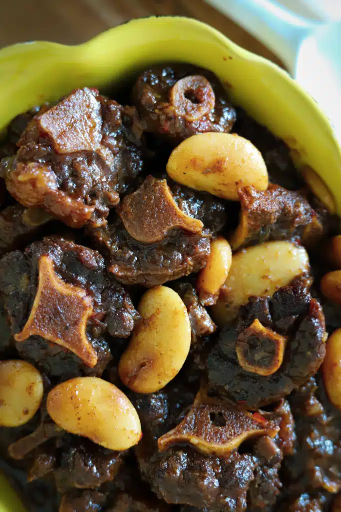

Oxtail

Oxtail is a gelatin-rich meat, which is usually slow-cooked as a stew or braised.(My mother makes it better than anyone)
Ingredients
- 2 ½ pounds oxtail
- 1 tablespoon soy sauce
- 1 tablespoon Worcestershire sauce
- 1 tablespoon salt
- 1 tablespoon white sugar
- 1 tablespoon garlic and herb seasoning (such as Spike®)
- 1 teaspoon browning sauce (such as Grace®)
Steps
- Place oxtail in a shallow dish. Combine soy sauce, Worcestershire sauce, salt, sugar, garlic and herb seasoning, browning sauce, paprika, cayenne pepper, and black pepper together in a small bowl.
- Heat vegetable oil in a large, deep skillet over medium-high heat. Sear oxtail in hot oil until golden brown, about 3 minutes per side; transfer to a plate and set aside.
- Sauté carrots, celery, onion, and garlic in the same skillet until softened, about 5 minutes.
- Add beef broth, thyme, rosemary, and bay leaf; bring to a boil. Add oxtail, with its juices, and butter.
- Reduce heat to low, cover, and simmer until oxtail is fork tender, about 3 hours.
- Uncover skillet and increase heat to high. Cook, stirring occasionally, until sauce reduces and thickens, about 5 minutes.